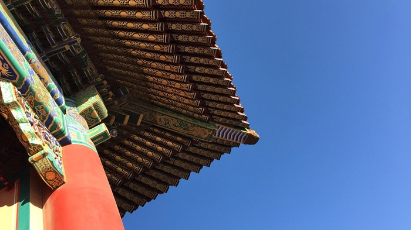

2012-2017：不“讲政治”的中国权力斗争
2017-03-16 21:32
来源:
中国人权双周刊
作者: 何清涟程晓农

官场有权力斗争，这是官场政治的天然组成部分，人所共知。中共的高层斗争，建国后五十年都“讲政治”；但是，过去近二十年来，特别是过去五年来，权力斗争的特色变成了“不讲政治”。自从2012年人代会期间薄熙来案发，五年来多位党、政、军高层人物相继落马，随后中央政府和各地党政负责人大换班，直到这次人代会平静度过，似乎中国的高层和中层人事变动即将告一段落，中共十九大之前的政治格局基本底定。这五年来，政坛风波迭起，大案不断，从案件本身来看，几乎所有落马的高官都涉嫌腐败，是否因此可以判断，这些垮台的在任和卸任高官只是贪腐案发而已？倘若确实如此，为什么国内和国际媒体过去五年中最频繁使用的一个相关词却是权力斗争呢？如果权力斗争是一条主线，那么，这五年当中令世人高度关注的连年权力斗争，为什么与中共历史上以政治立场为话语中心的各次权力斗争完全不同？现在好像到了一个可以略作小结的时间点了。
一、权力斗争当中的“政治正确”
凡是对中国现代史稍有研究的人都不难发现，中共建政以后，从1954年高饶反党集团案开始，高层斗争从未间断，继此案之后又有彭德怀反党集团案、彭罗陆杨案、刘少奇案、杨余傅案、林彪案、四人帮案等等，每案均牵扯大批中层官员；如果把受批判下台、但未定为案件的高层人物算上，则还有1958年发生的批判刘伯承、粟裕，1980年的批评华国锋，1986年的批评胡耀邦，1989年的批判赵紫阳等等。只要是发生在毛泽东时代的案子，除了林彪一案外，现在官方都公开或暗地承认是冤案；而民间则对胡耀邦、赵紫阳始终高度同情。所有这些高层政治冲突都有一个共同特点，那就是从政治上批判被打击者，每次官方都宣称，被打击者犯有“政治上不正确”的种种“错误”；但是，事后史家的分析研究总会发现，所有这些冲突当中，都不难找到权力斗争的影子。所谓权力斗争的影子，或者是最高统治者认为自己的权力地位受到挑战，因此拉拢一批人打击被怀疑者；或者是高层本来就存在着对被打击者不满而必欲置其于死地的势力，寻找机会削弱对方，壮大己方。
这种“讲政治正确”的权力斗争，大概是毛泽东麾下那开国一辈共同的习惯和“爱好”。邓小平去世之后，中共高层虽然仍然权力斗争不断，但此类斗争已经不再“讲政治”了，比如陈希同、陈良宇两案，都不谈政治，仅以腐败结案；与此同时，对陈希同和陈良宇也不再“宜将剩勇追穷寇”，办案仅涉本人而未追究其亲信部属，这似乎也顺理成章，贪腐总是个人行动，并非“集体打家劫舍、然后团伙分赃”。
但是，过去五年来，情况又为之一变。高层的政治斗争似乎在规模和时间长度上恢复到了毛泽东时代的“水平”，在官媒上也出现了“政治野心家、阴谋家”之类的“政治化”专用批判术语；然而，所有涉案高官的审判中，却从不使用任何政治罪名，而是单纯用腐败罪由。如果这些涉案高官只涉嫌腐败、而不涉权力斗争，何来“政治野心家、阴谋家”一说？如果他们都牵涉权力斗争，那他们是各人单兵作战，还是“成帮成伙”？
二、高层斗争：从权力斗争变成“清党运动”
五年来的高层权力斗争，究从何来？薄熙来、周永康、郭伯雄、徐才厚、令计划们自行其是，似无疑问；但是，他们真的想“另立中央”，或者制定出一套自己的完整政治路线，要否定中共的“核心价值观”？恐怕未必。换个角度去看，五年前那场“薄、王大戏”在偏于一隅的重庆开打时，其他各地的中层和基层官员们兴致盎然地“观剧”之余，大概没有人会料到，这场“渝剧”不只是震撼京华，一两年后居然演变成了令全国官场上上下下人人自危的反腐败“清党运动”。
回溯这一轮高层权力斗争，其兆始是薄熙来案。导致薄熙来垮台的起因是王立军叛逃美国领馆，而他交到美领馆的材料披露出种种与薄直接、间接、或者无直接关系的高层内幕，最后通过薄案，引爆了公开化的高层权力斗争。其实，即使没发生薄熙来案，高层斗争也早就存在，而且必然延续到十八大之后；但是，薄熙来、周永康、郭伯雄、徐才厚、令计划们似乎并没有“另立中央”之类的计划，迄今为止也未看到他们有一套完整的政治路线，要实现什么重大的政治目标。海外媒体经常谈论薄熙来的“唱红打黑”，那不是政治路线，不过是政治策略的运用而已。
现在看来，薄熙来、周永康、郭伯雄、徐才厚、令计划们历史上并没有多少渊源，彼此之间也未形成紧密的帮伙关系；但是，他们有共同的政治需要。究其动机，其实是一种为了自保而试图干涉影响朝政的企图。许多高层人物多年来早已深涉腐败，为了保住身家性命，他们必然要插手高层人事和权力分配；他们与习近平所争的，不是政治路线，而是个人利害。从这个角度来看，针对他们所要保护的个人利害，以反腐败为方针加以惩处，似乎也很自然。
实际上，习近平从处置薄熙来案开始，确实对各种高层案件采用了非政治化处理的方法，以腐败为主要罪由。如果只有薄熙来一个孤案，也许案件办完后，就像陈希同、陈良宇两案一样，不会出现全面反腐败运动，官场可能重回原态。但是，薄案之后诸案频发，沿着反腐败的路数挖下去，其所涉腐败规模、数量越来越大，高层腐败的严重程度已然曝光。而民众对官场的全面腐败积愤已久，高层腐败一旦揭开，与高层权力斗争并无关联的中层、基层腐败被纷纷举发，于是，这次从权力斗争开始的反腐败，就演变成清理党内的全面腐败。或许可以说，过去五年来的中共党内政治，从高层权斗开始，最后不期然地形成了以反腐败为旗帜的“清党运动”；而反腐败也就不再是单纯处理高层权力斗争的手法，却变成了对整个官场的清查、清理、清洗。
三、高层政治：从集体领导变成个人集权
经过五年来的“清党运动”，中国的高层政治形成了新的个人集权模式，与此前三十五年的集体领导模式形成了强烈的反差。自从毛泽东死后，中共的领导模式基本上是集体领导体制。在华国锋时代，华这个“英明领袖”在高层其实从无足够的权威和权力；邓小平时代则有陈云等元老制衡邓；江泽民和胡锦涛时代更是比较典型的集体领导模式。
集体领导和个人集权，是共产党政权仅有的两种领导模式。在所有共产党国家的历史上，领导模式都在集体领导和个人威权之间来回摆动。这个“钟摆”的摆动规律是：起初，党内高层一般都按照马克思主义教条的原意，实行集体领导；然后，为了追求共产党的国际政治目标和国内经济目标，必然会通过集权体制强化对资源的支配和对民众的压榨，其间，为了压制党内和社会上出现的批评声音，打击异己的过程就逐渐完成了最高领导人的个人集权，斯大林和毛泽东走过同样的路；一旦个人集权的最高领导人去世，新的领导层很难形成某个人的个人集权，于是集体领导再度出现，在这个阶段，集体领导为了挽回民心，多半会采用“花钱买稳定”的统治策略，苏联的赫鲁晓夫和勃列日涅夫时代，以及中国的邓、江、胡时代，都是如此；等到经济出现困难、经济资源不敷使用时，也是腐败高发阶段，此刻集体领导下的战略选择可能发生大分歧，苏共解体就是这时发生的，而十八大时中共的经济繁荣尚能维持，假如不是高层权力斗争爆发，以往的集体领导体制可能仍然不变，而腐败的官僚体系也仍然会得到充分保护，不受触动。
长达三十五年的集体领导模式已经造成了中共建政以来从未有过的党国危局，腐败渗透到政权的各个环节，集体领导下高层的权力割据产生了上下依赖的“保护者-被保护者”关系网（patron-client network）。权力系统的涣散、腐败、官员各留后路的普遍现象，以及面对经济荣景不再、社会不满日益积累的无力感，这种局面与邓、江、胡时代截然不同；高层面临的不再是胡赵时期那种有开拓勇气和改革空间的局面，也不是胡锦涛那种可以躺着混下去的局面，而是不用非常手段就难以应对四面起火、八处冒烟的状态。过去五年来，中共的反腐败“清党运动”正好与经济困难同步出现，反腐败“清党运动”不仅具有重新强化集权、整顿官场的功能，而且也成为节约经济资源、堵塞腐败造成的经济资源“跑冒滴漏”的手段，从而达到延长统治的目的。这样就改变了沿袭三十五年的集体领导模式，因为腐败已经全面化，而集体领导模式会阻挠反腐败“清党运动”的推行，于是，中共的领导模式就转入重建最高领导人个人威权的阶段。
显然，领导模式的转变，与统治需要有密切关系，邓、江、胡时代的集体领导模式“宽容腐败”；而习近平要拧紧螺丝，维持“低成本统治模式”，采用个人威权的领导模式便成为一种最后的选择。“清党运动”不仅一定程度上遏止了全面腐败的升级，而且因为官员们普遍有“尾巴”，反腐败“永远在路上”，这也就意味着对官员们的政治压力“永远在路上”；在持续的政治压力下，官员们不管如何暗中腹诽，表面上不得不对个人集权的领导模式表示完全顺从，于是个人集权就顺利完成了。
恢复个人集权和政治高压之后，腐败行为有所收敛，不过是“小人畏刑”、眷恋乌纱而已，但客观上可以减少政权的资源损耗，在经济滑坡的长期趋势下可尽量延长政权寿命，但并不能挽救经济恶化。今后高层可能不会再有重大的权力斗争，也不会再考虑政治进步，社会上的万马齐喑几乎成为定局。当局不会再像江泽民时期那样顾及政治上的国际形象；经济上不会再考虑经济体制的国际接轨，而是以保住外汇储备和金融系统安全为唯一考量。